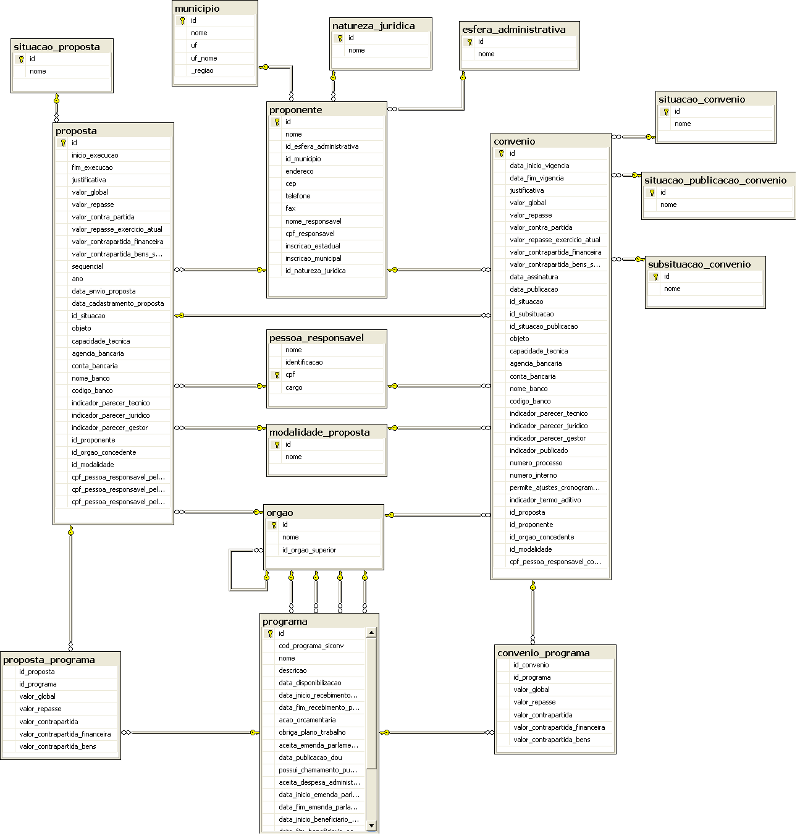

Por que Dados Abertos SICONV?
A prestação de dados como um serviço governamental traz vantagens pra toda a sociedade, incluindo o próprio governo. O Ministério do Planejamento, Orçamento e Gestão está economizando recursos através da publicação dessas informações na Internet.
A disponibilização dos dados do SICONV é um compromisso firmado pelo governo brasileiro na
Parceria para Governo Aberto (
Open Government Partnership - OGP do inglês). O governo está comprometido em promover a transparência dos gastos públicos, fornecer informações de valor agregado à sociedade e promover a pesquisa e inovação tecnológica através da implementação da políticas brasileira de dados abertos. Essa API está sendo desenvolvida como parte da
Infraestrutura Nacional de Dados Abertos - INDA.
Quais dados estão disponíveis?
O SICONV mantém registro de todos os convênios firmados pelo poder executivo da Administração Pública Federal. Abaixo uma lista dos dados disponíveis por essa API:
- Dados dos proponentes
- Dados das propostas
- Dados dos convênios
- òrgãos concedentes
- Programas
- ...
Modelo de Dados

Imagem maior
Breve Explicação Sobre o SICONV
Para o SICONV, um convênio ou contrato de repasse é o instrumento que formaliza transferências voluntárias entre um órgão da Administração Pública Federal e estados, municípios, Distrito Federal e entidades privadas sem fins lucrativos. A organização que recebe o recurso financeiro precisa ter personalidade jurídica, e é chamada de proponente ou convenente. O proponente cria uma proposta que é a formalização da intenção deste de firmar um convênio com um órgão da APF. A proposta deve conter um objeto e uma justificativa, além de outras informações, e deve indicar qual programa de governo ela está implementando. O órgão da APF, também chamado de concedente, pode aceitar a proposta, que a partir desse momento passa a ser chamada de convênio. Um convênio tem um período de vigência.
Durante a execução do convênio, o convenente deve prestar contas do gasto dos repasses, e o concedente deve qualificar a execução através de pareceres. Esta parte do SICONV ainda não está disponibilizada nesta API.
Como utilizar a API
O acesso aos dados é feito através de URLs, recursos web nos formatos XML, JSON e CSV. Além desses formatos, também é disponibilizada uma representação em HTML, que possibilita ua visualização através do navegador e melhora a classificação desses conteúdos nas ferramentas de busca. Em cada consulta é possível especificar uma série de parâmetros de filtro, que devem compor a URL. Esta API segue os princípios REST e implementa a característica HATEOAS desta arquitetura. Você (ser humano ou máquina) pode navegar através de todos os recursos (convênios, proponentes, órgãos, etc.) apenas utilizando os links disponíveis, começando por aqui: lista inicial.
Para acessar os dados da API é necessário conhecer o endereço ou URL:
http://api.convenios.gov.br/siconv/v1/consulta/.?=&=
Dois parâmetros são necessários para solicitar qualquer dado através da API: e . O método indica qual informação você quer e o "formato" define o formato da resposta, em HTML, XML, JSON ou CSV. Consulte nossa documentação para saber quais são os métodos disponíveis. Os parâmetros campo e valor são utilizados para filtrar os registros retornados pelos métodos.
Alguns exemplos de consultas:
Todas as consultas acima podem retornar dados nos formatos JSON, XML e CSV. Basta trocar o trecho "html" pelo respectivo formato.
Algumas visões de agregações:
- Total de convênios por ano e mês da data de assinatura em CSV: http://api.convenios.gov.br/siconv/v1/visao/total_convenios_por_ano_mes_data_assinatura.csv
Visualização no portal dados.gov.br
- Total de convênios de ONGs por ano e mês da data de assinatura em CSV: http://api.convenios.gov.br/siconv/v1/visao/total_convenios_por_ano_mes_data_assinatura_ongs.csv
Visualização no portal dados.gov.br
- Total de convênios em vigência por mês em CSV: http://api.convenios.gov.br/siconv/v1/visao/total_convenios_em_vigencia_por_mes_mv.csv
Visualização no portal dados.gov.br
Licença de Uso dos Dados
Esses dados são disponibilizados sob a licença ODBL (Open DataBase License). Todos os direitos dos conteúdos individuais estão licenciados sob a DBCL (Database Contents License).
Atualidade
A atualização dos dados é realizada diariamente por processo automático a partir dos dados do
Data Warehouse do Siconv do dia anterior (D-1).
Dump do Banco de Dados
Em breve disponibilizaremos um dump de todo o banco de dados.
Atenção!
Essa é uma versão beta, a api está em estado de desenvolvimento e os métodos poderão sofrer alterações sem aviso.
Tire dúvidas sobre o SICONV através do endereço http://convenios.gov.br/ ou pelo telefone 0800 978 2340.
{kind=link}